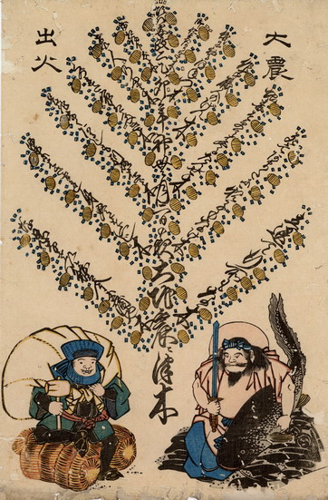

語呂合わせした金儲けの心構えを木の枝状に配し、そこに小判が実っている。その下の右側に恵比寿の扮装をした鹿島大明神が鯰を脇に抱えている。左側の大黒は、職人が扮したものである。
出典：親書誌：U426_nichibunken_0187：頃ハ安政二乙卯年神無月二日の夜大地震ニつ木；コロハアンセイニイツボウネンカンナヅキフツカノヨルオオジシンニツキ／日付：2010／資源識別子：U426_nichibunken_0187_0001_0000
Copyright (c)2010- International Research Center for Japanese Studies, Kyoto, Japan. All rights reserved.